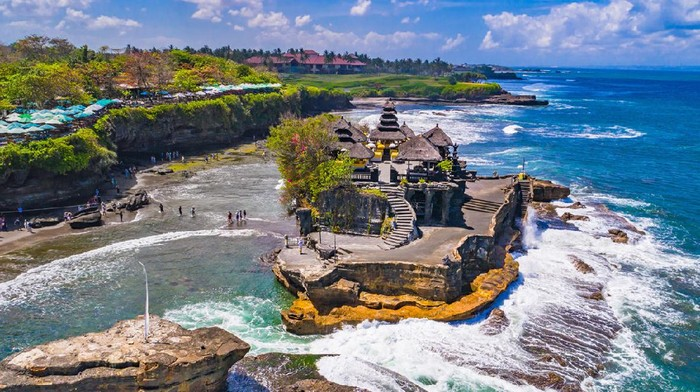

Profil
Tabanan merupakan sebuah kabupaten di provinsi Bali, Indonesia. Ibu kotanya adalah Kecamatan Tabanan Kota. Kabupaten ini terletak sekitar 35 km di sebelah barat Kota Denpasar.
Tabanan berbatasan dengan Kabupaten Buleleng di sebelah utara, Kabupaten Badung di timur, Samudra Indonesia di selatan dan Kabupaten Jembrana di barat. Luas Kabupaten Tabanan adalah 1.013,88 km²
Sejarah
Terbentuknya pemerintahan di Tabanan sejak dimulainya Pemerintahan Kadipaten Bali di bawah kepemimpinan Dalem Sri Kresna Kepakisan. Dia dilantik pada Purnamaning Kapat tahun 1352 yang berkedudukan di Samprangan.
Pada saat yang sama, juga dilakukan pelantikan Arya Kenceng selaku Anglurah yang sebelumnya menjadi Pimpinan Pendudukan Majapahit di Tabanan sejak Tahun 1343. Pemerintah di Tabanan terbentuk setelah 9 tahun Majapahit menduduki Bali.
Sesaat setelah pelantikan Dalem dan Anglurah maka di wilayah Tabanan secara resmi terbentuk pemerintahan yang menganut sistem kerajaan. Raja Bali Dalem Sri Kresna Kepakisan memerintah di Bali selama 23 tahun (1350-1373).
Jauh sebelum berdirinya Kabupaten Tabanan saat ini, terjadi peristiwa pemindahan Pusat Pemerintahan Kerajaaan (Puri) di masa lalu. Yang semula berada di Pucangan Buahan lalu dipindah ke wilayah Kota Tabanan sekarang yang saat itu disebut Singhgasana.
Nama Tabanan sendiri berasal dari kata Tabunan yang berarti asap mengepul. Dikisahkan sebelum pusat pemerintahan di pindahkan Raja Sirarya Ngurah Languang mendapatkan wahyu/pewisik yan meyatakan "dimana ada asap mengepul agar disanalah di bangun puri”.
Sementara itu, kata Tabanan sendiri bisa berhubungan dengan dengan kata Taban yang artinya tempat duduk yang terkait dengan kata Singhgasana. Itulah sebabnya Raja Sirarya Ngurah Languang kerap disebut “Sang Nateng Singhgasana” atau kerap juga disebut “Ida Bhatara Nangun Graha”.
Terjadinya peristiwa pemindahan pusat kerajaan (Puri) Tabanan ini terjadi 141 tahun setelah terbentuknya pemerintahan di Tabanan dibawah pemerintahan Majapahit di tanah Jawa.
Wisata
Kabupaten Tabanan memiliki sejumlah tempat rekreasi dan objek wisata yang menjadi tujuan tour wajib bagi wisatawan yang sedang liburan ke pulau Dewata Bali.
Kabupaten ini menawarkan kombinasi pemandangan alam yang terbilang lengkap, mulai keindahan pesisir sampai keindahan alam pegunungan. Wilayah topografinya berada diantara ketinggian 0-2.276 meter di atas permukaan laut.
Kawasan pariwisata di wilayah Tabanan, menawarkan alam indah dengan cuaca panas sampai yang berhawa sejuk seperti kawasan Bedugul. Sehingga tidak mengherankan sejumlah tempat rekreasi dan objek wisata wisata di kabupaten Tabanan menjadi destinasi tour wajib di pulau Bali.
Bahkan saat ini banyak tempat rekreasi baru bermunculan, yang ideal untuk mengisi aktivitas liburan bersama bersama sahabat, keluarga dan juga anak-anak.
Tanah Lot

Salah satu wisata khas Tabanan yaitu Tanah Lot yang menjadi destinasi populer di Bali. Destinasi ini berada di Desa Beraban, Kecamatan Kediri, Kabupaten Tabanan. Terdapat dua pura yang ada di Tanah Lot, yaitu pura yang berada di atas bongkahan batu dan pura yang berada di atas tebing dengan posisi agak menjorok ke laut.
Pura Tanah Lot menjadi tempat bagi masyarakat untuk pemujaan dewa-dewa penjaga laut. Ketika air pasang, pura ini tampak seperti berada di tengah laut. Menurut sejarah, pura ini diyakini berdiri pada abad ke-16 oleh Dang Hyang Nirartha yang merupakan tokoh agama yang disegani di Bali.
Jati Luwih

Anda yang ingin merasakan pedesaan yang damai, tenang, dan asri, bisa berkunjung ke Jatiluwih. Jatiluwih merupakan salah satu desa yang terdapat di Kabupaten Tabanan, dengan menonjolkan bidang pertanian sebagai aspek wisata unggulan. Disana setiap penduduk menanam padi dan membuat sawah yang terhampar menjadi menarik untuk dilihat.
Di pagi hari, Jatiluwih memberikan pemandangan yang menakjubkan karena kabut yang terangkat dar hamparan padi. Bahkan sistem perairan yang digunakan oleh masyarakat Desa Jatiluwih merupakan irigasi kuno, yang kemudian di daftarkan sebagai salah satu warisan dunia UNESCO.
Agro Puncak Bedugul
Kembali ke wisata buatan lainnya di Tabanan, Agro Puncak Bedugul bisa menjadi salah satu tempat wisata menarik dengan pemandangan alam dan udara yang sejuk. Saat liburan dimulai, tempat wisata ini banyak dikunjungi oleh wisatawan lokal. Anda juga bisa melihat matahari terbenam dan terbit yang terlihat di Gunung Batur dan Agung.
Fasilitas yang ada di Agro Puncak Bedugul ini terbilang lengkap, selain melihat berbagai tanaman yang sudah ditata sedemikian rupa, Anda juga bisa duduk dan bersantai menikmati pemandangan alam.